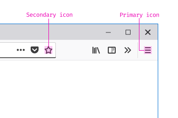
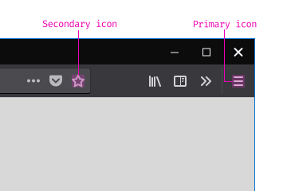
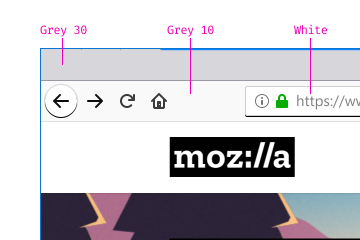
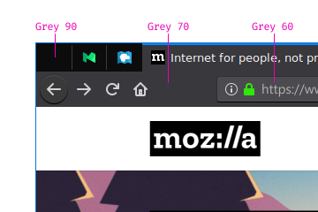

Color
Firefox colors are bold, vibrant and attractive. They enhance the experience by providing visual clues and by bringing attention to primary actions.
Firefox Colors
Palettes
The color palette includes primary and secondary colors that can be used for interfaces and illustrations.
Blue
Firefox Blue is one of our primary colors. We use blue as accent color for highlighting buttons, links, and active states like the active tab in Firefox default theme.
| Blue 40 | #45a1ff |
AA | Fails |
| Blue 50 | #0a84ff |
AA Large | AA Large |
| Blue 60 | #0060df |
AA | AA |
| Blue 70 | #003eaa |
AAA | AAA |
| Blue 80 | #002275 |
AAA | AAA |
| Blue 90 | #000f40 |
AAA | AAA |
Teal
Firefox Teal is one of our primary colors. We use teal as an attention color.
| Teal 50 | #00feff |
AAA | Fails |
| Teal 60 | #00c8d7 |
AAA | Fails |
| Teal 70 | #008ea4 |
AA | AA |
| Teal 80 | #005a71 |
AAA | AAA |
| Teal 90 | #002d3e |
AAA | AAA |
Magenta
Firefox Magenta is one of our primary colors. We currently have no common usage for it.
| Magenta 50 | #ff1ad9 |
AA Large | AA Large |
| Magenta 60 | #ed00b5 |
AA Large | AA Large |
| Magenta 70 | #b5007f |
AAA | AAA |
| Magenta 80 | #7d004f |
AAA | AAA |
| Magenta 90 | #440027 |
AAA | AAA |
Green
Firefox Green is commonly used to indicate success.
| Green 50 | #30e60b |
AAA | Fails |
| Green 60 | #12bc00 |
AA | Fails |
| Green 70 | #058b00 |
AA | AA |
| Green 80 | #006504 |
AA | AA |
| Green 90 | #003706 |
AAA | AAA |
Yellow
Firefox Yellow is commonly used for warnings.
| Yellow 50 | #ffe900 |
AAA | Fails |
| Yellow 60 | #d7b600 |
AAA | Fails |
| Yellow 70 | #a47f00 |
AA | AA |
| Yellow 80 | #715100 |
AAA | AAA |
| Yellow 90 | #3e2800 |
AAA | AAA |
Red
Firefox Red is commonly used for errors.
| Red 50 | #ff0039 |
AA Large | AA Large |
| Red 60 | #d70022 |
AA | AA |
| Red 70 | #a4000f |
AAA | AAA |
| Red 80 | #5a0002 |
AAA | AAA |
| Red 90 | #3e0200 |
AAA | AAA |
Purple
Firefox Purple is commonly used to indicate privacy.
| Purple 30 | #c069ff |
AA | AA |
| Purple 40 | #ad3bff |
AA | AA |
| Purple 50 | #9400ff |
AA | AA |
| Purple 60 | #8000d7 |
AAA | AAA |
| Purple 70 | #6200a4 |
AAA | AAA |
| Purple 80 | #440071 |
AAA | AAA |
| Purple 90 | #25003e |
AAA | AAA |
Orange
Firefox Orange is only used for branding. Do not use it otherwise.
| Orange 50 | #ff9400 |
AAA | Fails |
| Orange 60 | #d76e00 |
AA | AA Large |
| Orange 70 | #a44900 |
AA | AA |
| Orange 80 | #712b00 |
AAA | AAA |
| Orange 90 | #3e1300 |
AAA | AAA |
Ink
Firefox Ink is commonly used for interfaces (e.g., Firefox tab strip on Windows 10 default theme).
| Ink 70 | #363959 |
AAA | AAA |
| Ink 80 | #202340 |
AAA | AAA |
| Ink 90 | #0f1126 |
AAA | AAA |
Grey
Firefox Grey is commonly used for interfaces (e.g., Firefox light theme).
| Grey 10 | #f9f9fa |
AAA | Fails |
| Grey 20 | #ededf0 |
AAA | Fails |
| Grey 30 | #d7d7db |
AAA | Fails |
| Grey 40 | #b1b1b3 |
AAA | Fails |
| Grey 50 | #737373 |
AA | AA |
| Grey 60 | #4a4a4f |
AAA | AAA |
| Grey 70 | #38383d |
AAA | AAA |
| Grey 80 | #2a2a2e |
AAA | AAA |
| Grey 90 | #0c0c0d |
AAA | AAA |
White
We use white for the background of doorhangers or in-content menus.
| White 100 | #ffffff |
AAA | n/a |
Text and Background Colors
Visit typography for more information on text color.
Dark Text on Light Background
|
Primary Text
|
|
Secondary Text
|
Light Text on Dark Background
On dark backgrounds, the typography is set in White for primary text and Grey 10 for secondary text.
|
Primary Text
|
|
Secondary Text
|
Color Combinations
On a background color, use White when specified.
|
Primary Text
|
Use 90 (the darkest shade) when white text fails contrast ratio. In this example, Teal 90 is combined with a Teal 50 background.
Teal 90 Text
Icons and Other Elements
Visit iconography for more information about icon colors.
Use Grey 90 a80 rgba(12, 12, 13, 0.8) on light backgrounds for primary icons. Use Grey 90 a60 rgba(12, 12, 13, 0.6) for secondary icons.

Use Grey 10 a80 rgba(249, 249, 250, 0.8) on dark backgrounds for primary icons. Grey 10 a60 rgba(249, 249, 250, 0.6) for secondary icons.

Themes
Firefox features default themes and supports custom themes. Ensure that changes affecting the interface will continue to support a variety of backgrounds, images, and both light or dark colors.
Light Theme

|
White
|
|
Grey 10
|
|
Grey 30
|
Dark Theme

|
Grey 60
|
|
Grey 70
|
|
Grey 90
|
Windows 10 Accent Colors (used like themes)
Accessibility
Color Contrast
Follow the WCAG 2.0 Level AA guidelines to ensure proper color contrast.
Color Contrast Values
-
Fail – Your text doesn’t have enough contrast with the background.
-
AA Large – Acceptable contrast for type sizes >= 18px.
-
AA – Acceptable contrast for text sizes below 18px.
-
AAA – Enhanced contrast.
Colour Contrast Analyser contrast and color blindness analyzer (Windows and macOS) by The Paciello Group.
Contrast Ratio contrast ratio calculator (Web) by Lea Verou.
Color Blind
There are different types of color blindness. The most common form is red-green color blindness, followed by blue-yellow color blindness and total color blindness. Red-green color blindness affects up to 8% of males and 0.5% of females. Ensure that adjacent color shades are distinguishable for color blind people. Use a color blindness analyzer to confirm your choices.
Sim Daltonism color blindness simulator (iOS and macOS) by Michel Fortin.
High Contrast on Windows
Windows currently offers multiple high contrast modes. Ensure that colors are translated properly, following the hierarchy defined for the default theme.
Supporting High Contrast Themes on Windows guidelines by Windows Dev Center.